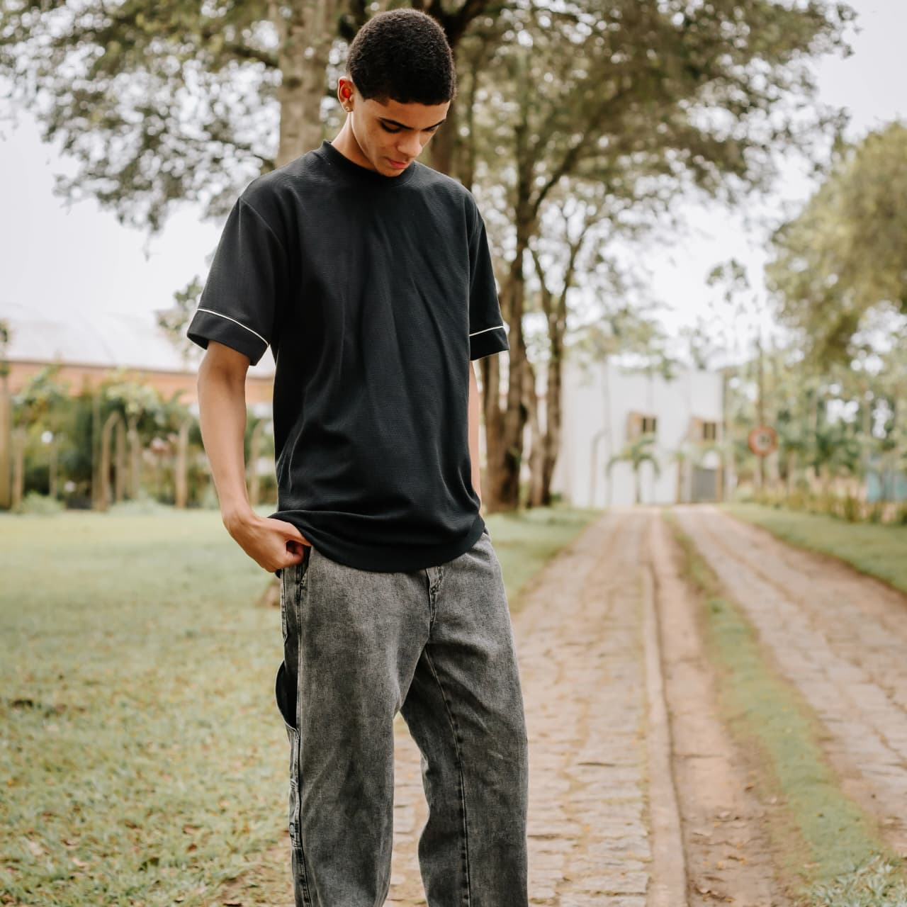

| Cidade | Instituição de Esnsino | Tipo |
|---|---|---|
| São Gabriel | EEEF Miranda Cunha | Fundamental 1 |
| Nova Venecia | Polivalente | Fundamental 2 |
| EEEM Dom Daniel Comboni | Ensino Medio | |
| Vila Velha | UVV | Ensino Supeior |
- Pretendo continuar na UVV e futuramente, fazer uma pós em cybersecurity
Participei de alguns trabalhos academicos como :
- Nessa materia estudamos e aprendemos sobre a web. Assim nós nos aprofundamos tanto na sua origem, quanto na sua evolição. Aprendemos tanbem a produxir nossas proprias paginas web
- Nessa materia aprendemos como funciona o Banco de dados, nela aprendemos suas regras, funções e como aplica-lo de forma correta
-Nessa materia aprendemos a pensar nas melhores maneiras de satisfazer o usuario em uma aplicação web
-Nessa materias nós aprendemos a base do conhecimento sobre hardware e software
-Nessa materia nós aprendemos a melhora nosso pensamento logico, que é excenssial para a programação
Planos futuros |
|---|
| Para o futuro, gostaria de me forma em sistemas de informção, pela UVV. Após isso quero fazer uma pós em cybersecurity, e trabalhar na area, pelo Blue Team |